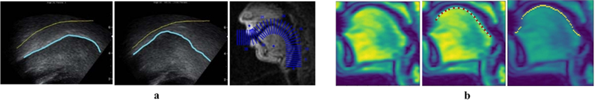
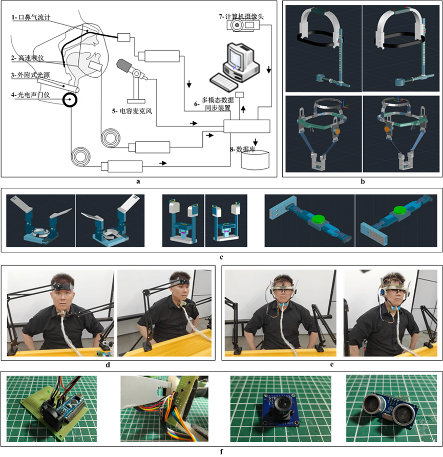

研究方向
认知与智能实验室围绕言语科学、人工智能及医学交叉等领域持续开展研究， 在语音、图像、多模态智能与智能计算等方面形成了较为鲜明的研究特色。 当前实验室主要研究方向包括：人机智能交互、发音相关医学图像处理、 个性化语音机理研究、新型发音运动观测系统、智能感知、视听多媒体认知计算、 类脑智能计算等，并面向语音识别、语音分析、医疗健康、智能交互等应用场景开展研究。
1. 人机智能交互
实验室围绕人机智能交互开展相关研究，关注感知、交互、反馈与应用系统之间的协同机制。 相关工作面向智能终端、交互式设备和多模态传感场景，探索更加自然、高效的人机交互方式， 为智能感知系统、交互式应用和语音相关研究提供基础支撑。

|
图1 人机智能交互相关研究示意 |
2. 发音相关医学图像处理
发音相关医学图像处理是实验室的重要研究方向之一，主要关注舌运动超声成像、 磁共振成像等多种医学图像中的结构与运动信息提取。 通过对发音器官轮廓、运动轨迹和图像特征的分析，可以为言语病理学、发音机理研究、 个性化语音建模等任务提供重要的数据基础和技术支持。
|
 |
图2 发音相关医学图像处理示意 |
3. 个性化语音机理研究
个性化语音机理研究旨在深入理解不同个体在发音方式、声学特征和语音行为上的差异， 并结合语音学、语言学、声学和机器学习等方法建立相应的分析模型。 该方向服务于个性化语音分析、说话人特征建模、语音障碍研究及相关智能应用。

|
图3 个性化语音机理研究示意 |
4. 新型发音运动观测系统
实验室持续开展发音运动观测系统研究，通过采集发音过程中的生理与声学信息， 帮助研究发音机制、发音运动规律以及相关障碍分析。 该方向涵盖口鼻气流、声带观测、超声成像及多模态采集系统等内容， 为语音学研究、发音病理分析和智能语音系统提供基础观测平台。

|
图4-1 发音观测系统相关设备示意 |
|
 |
图4-2 基于超声成像的多模态数据分析系统示意 |
5. 智能感知
智能感知方向关注复杂环境中多模态信息的获取、表征与理解， 尤其强调受到人脑听觉系统启发的计算模型研究。 该方向服务于音频感知、听觉前端建模、多模态融合与智能识别等任务， 有助于提升机器对复杂声学环境和多源信息的理解能力。

|
图5 智能感知相关研究示意 |
6. 视听多媒体认知计算
视听多媒体认知计算主要研究音频、视频及相关多媒体信息的协同建模与理解， 关注视听信息在感知、表达和交互中的联合计算问题。 该方向面向多媒体内容分析、认知理解、交互系统构建等场景， 探索更加贴近人类认知机制的信息处理方式。

|
图6 视听多媒体认知计算示意 |
7. 类脑智能计算
类脑智能计算方向关注受脑认知机制启发的计算模型与智能系统设计， 探索更具鲁棒性、适应性和泛化能力的智能计算方法。 相关研究可服务于复杂模式识别、智能决策及新型神经网络结构设计等问题， 也是实验室跨语音、感知与智能计算的重要延伸方向。

|
图7 类脑智能计算示意 |